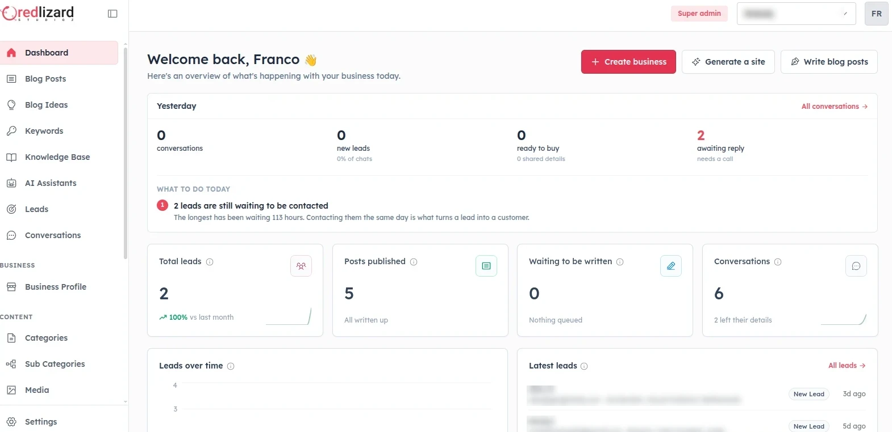

FRANCO SEILER01/07
EL PROCESO
Cómo es trabajar conmigo


1 · Llamada
2 · Propuesta
3 · Construcción
4 · Entrega

Todos los proyectos incluyen un tiempo de soporte. Después, mantenimiento mensual o cuando lo necesites.

Un panel para que edites vos el contenido, como el que usa Bellum.